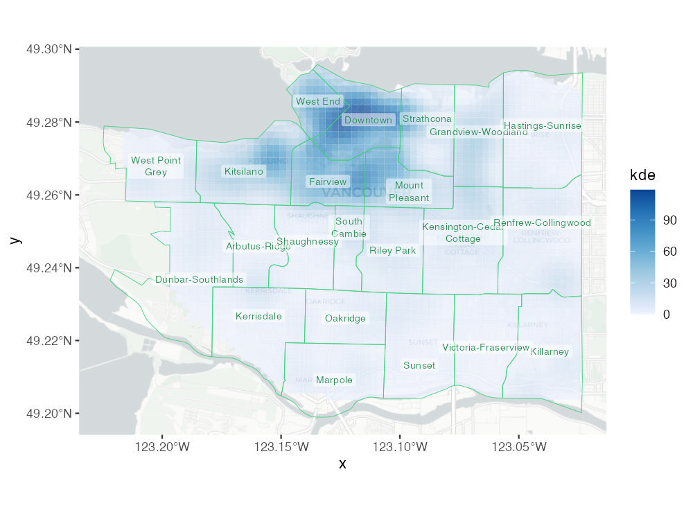
6 Mapping crime patterns
This chapter introduces techniques for mapping concentrations of recorded crime using a technique called kernel density estimation (KDE). By the end of this chapter, you will be able to produce a clear density map that shows where crime is most concentrated.
TipBefore you start
- Open Positron or – if you already have Positron open – start a new R session by clicking the Restart R (⟳) button in the Console panel. This makes sure no code you ran previously will interfere with the work you do in this chapter.
- Make sure you are working in the crime mapping project workspace you created in Section 1.5. In the top-right corner of the Positron window, you should see a folder icon and the words
crime-mapping. If not, click the File menu, then Open Folder … and choose thecrime-mappingfolder.
6.1 Introduction
In Chapter 5, we created a map showing bike thefts in the City of Vancouver. It was hard to see the overall pattern because many of the points representing theft locations overlapped. Dot maps can be useful when there are relatively few events or when exact locations matter, but density maps are often more effective for showing patterns in large point datasets. In this chapter we will learn how to estimate the density of recorded bike thefts and show it on a map.
By the end of the chapter, you will have produced this map:
By the end of this chapter, you will have learned how to:
- estimate a density layer using
hotspot_kde(); - adjust grid-cell size and bandwidth;
- choose an appropriate sequential colour scale;
- clip a density layer to the area covered by the data using
hotspot_clip(); and - add a base map, boundaries and neighbourhood labels.
The process we will use to produce the map has four main stages:
Load
download data from the internet and load it into an R session
Wrangle
data into the format we need
Model
data using kernel density estimation
Visualise
density on a map
In Chapter 5 you created chapter_05.R, which contains the code needed to download, load and prepare the Vancouver bike-theft data. We will make a copy of that script and add the code needed for this chapter:
- In Positron’s Explorer panel, expand the
Rfolder if necessary. - Right-click
chapter_05.Rand choose Copy. - Right-click the
Rfolder and choose Paste. - Right-click the copied file, choose Rename, type
chapter_06.Rand press .
Take care to copy the file rather than renaming the original. Keep chapter_06.R in the R folder throughout this chapter.
Open chapter_06.R and update the line that loads packages so that it includes two new packages that we will need for this chapter: ggspatial and sfhotspot.
Run this line by clicking anywhere on it and pressing on your keyboard.
6.2 Mapping crime density
When we speak about the density of crime, we mean the relative concentration of points in each part of the area we are studying, i.e. how many points (in this case, representing bike thefts) are there in each part of the map relative to all the other areas of the map.
To estimate the density of points in different areas of the map, R uses a technique called kernel density estimation (KDE). To do this, R must:
- divide the map into a grid of cells, each the same size,
- count the number of points in each cell,
- for each cell, count the number of points in nearby cells, but give less weight to (i.e. systematically undercount) those cells that are further away,
- for each cell, total up the count of points in that cell and the (weighted) count of points in nearby cells – this is the estimate of the density of points in that cell.
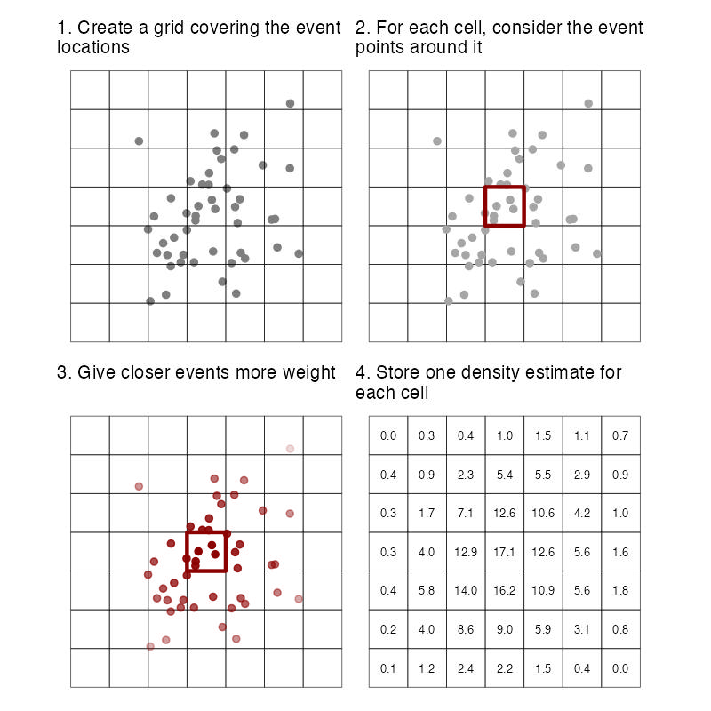
There are several ways we can make density maps in R. In this course we will use the sfhotspot package because it makes reasonable default decisions about how density maps should look, while still giving us control over their appearance if we want it. sfhotspot also has other useful functions that we will use in future chapters.
To create a density map using sfhotspot, we first use the hotspot_kde() function to convert a dataset of offence locations to an estimate of the density of offences for each cell in a grid. hotspot_kde() automatically chooses how big the cells in the grid should be (but we can set this ourselves if we want to).
Add this code to the script file for this chapter and then run that line of code:
TipWhy did we specify
quiet = TRUE?
The quiet = TRUE argument to the hotspot_*() family of functions (including hotspot_kde()) stops the function from producing progress messages as we go along. If you experience any problems using the hotspot_kde() function, the best place to start in working out what has happened is to run the code again with the quiet = TRUE argument removed.
As usual, we can use the head() function to check what the resulting object looks like:
Simple feature collection with 6 features and 2 fields
Geometry type: POLYGON
Dimension: XY
Bounding box: xmin: 490447.2 ymin: 5450107 xmax: 491647.2 ymax: 5450307
Projected CRS: WGS 84 / UTM zone 10N
# A tibble: 6 × 3
n kde geometry
<dbl> <dbl> <POLYGON [m]>
1 0 2.76 ((490447.2 5450107, 490447.2 5450307, 490647.2 5450307, 490647.2 …
2 0 2.24 ((490647.2 5450107, 490647.2 5450307, 490847.2 5450307, 490847.2 …
3 0 2.04 ((490847.2 5450107, 490847.2 5450307, 491047.2 5450307, 491047.2 …
4 0 2.63 ((491047.2 5450107, 491047.2 5450307, 491247.2 5450307, 491247.2 …
5 0 3.24 ((491247.2 5450107, 491247.2 5450307, 491447.2 5450307, 491447.2 …
6 0 3.13 ((491447.2 5450107, 491447.2 5450307, 491647.2 5450307, 491647.2 …The bike_theft_density object created by hotspot_kde() contains three columns: n contains the count of bike thefts in each cell, kde contains the estimate of the density of thefts in each cell, and geometry contains the outline of each grid cell.
Since hotspot_kde() produces an SF object, we can add it to a map using the geom_sf() function. We can also use the fill aesthetic to specify that the fill colour of each grid cell should be determined based on the values of the kde column in the bike_theft_density object.
We have already seen that we can set aesthetics such as colour and shape manually, but the aes() function allows us to specify that the values of different aesthetics should be controlled by columns in the data. The aes() function takes as its arguments pairs of values (combined with an = symbol) where the first value is an aesthetic and the second value is the name of a column in the data. For example, to use the colour of points on a map to represent different types of crime that were stored in a column in the data called type, we could use aes(colour = type). In the map above, we use aes(fill = kde) to specify that the fill colour of the grid cells on the map should be controlled by the kde column in the data. This is called mapping a column to an aesthetic.
ImportantWhen to specify values inside or outside
aes()
When should you specify the values of aesthetics inside aes() and when should you do it outside aes()?
- If you want an aesthetic to have a constant value for all the points, lines or other shapes in a layer, control the aesthetic outside
aes(). For example, you could usegeom_sf(data = bike_thefts, colour = "mediumblue")to make all the shapes in that layer blue. - If you want to vary the appearance of shapes according to values in the data, you should control the aesthetic inside
aes(). For example, you could usegeom_sf(aes(colour = month), data = bike_thefts)to vary the colour of shapes in a layer according to values of themonthcolumn in the data.
If you specify a constant value for an aesthetic (e.g. colour = "mediumblue") this will override any mapping for that aesthetic provided by the aes() function (e.g. aes(colour = month)). If you have used aes() to specify that an aesthetic should be controlled based on a column in the data but find that the aesthetic is not changing based on the data, check you have not also specified a constant value for that aesthetic.
aes() should normally be the first argument in a geom_*() function. If you want to specify the arguments in a different order then you must give the name of each argument, which means that for the aes() function you must specify mapping = aes(...) when aes() is not the first argument to whatever geom_*() function you are using.
In this map, instead of seeing each crime as a separate point, we see the density of crime as the filled colour of cells in a grid. By comparing this density map to the point map we produced before, we can see that the density map makes the areas with the highest frequency of thefts slightly easier to identify (although we will improve it much further below).
You can also see that our map now has a legend, showing that higher densities of bike thefts are shown on the map in light blue and lower densities are shown in dark blue. The exact values shown in the legend are not particularly meaningful, so we can ignore these for now.
QuizDensity mapping
What is a key advantage of using KDE over dot maps for crime data?
Which R function is used to create a density layer from point data?
Which argument in geom_sf() is used to specify that the fill colour of grid cells should be determined by the KDE values?
Where should you specify fill = kde when fill colour should vary according to values in the kde column?
6.2.1 Fine-tuning cell size and bandwidth
We can control the appearance of KDE maps in several ways. For example, we can vary the number of cells in the grid and the definition of what cells the kernel density estimation process should consider to be ‘nearby’ for the purposes of calculating weighted counts. Cells are considered to be ‘nearby’ to a particular cell if they are closer to that cell than a distance known as the KDE bandwidth.
By default, hotspot_kde() chooses the cell size and the bandwidth automatically. The maps below show how changing these defaults changes the appearance of our map (with the legend and axes removed to make the small maps clearer).
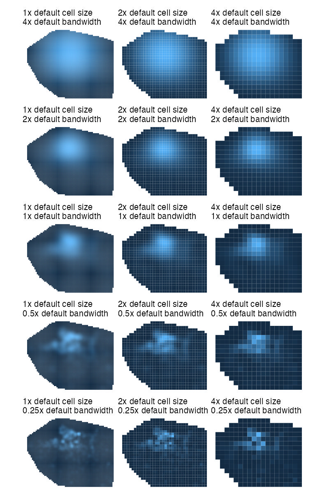
By looking at the maps on the right-hand side, you can see that reducing the number of grid cells leads to a map that looks blocky and lacks information. Looking at the maps towards the top of the figure above, you can see that increasing the bandwidth relative to the default makes the density surface smoother. The smoother the surface, the less detail we can see about where crime is most concentrated, until on the top row we can see almost no information at all. On the other hand, if we reduce the bandwidth too much (the bottom row of maps), each estimate is influenced by only the closest events, so the surface becomes fragmented and it is more difficult to identify broader patterns.
In many cases, you will not need to change the cell size used in calculating the density of points on a map, but if you do then you can do this using the cell_size argument to hotspot_kde(). A cell size of about 200 metres is often a good choice for maps showing a whole city, such as our map of Vancouver. However, for larger cities you might want to use a larger cell size and for maps of neighbourhoods you will usually want to use a smaller cell size.
Although you can set the bandwidth manually using the bandwidth argument to hotspot_kde(), you will almost never want to do this. Instead, you can vary the bandwidth relative to the automatically chosen default bandwidth by using the bandwidth_adjust argument. For example, if you wanted to see more detail in your map by using a smaller bandwidth, you could use bandwidth_adjust = 0.75 or bandwidth_adjust = 3/4 to set the bandwidth to be three-quarters of the default bandwidth.
ImportantStart with
bandwidth_adjust = 0.5
I recommend using a slightly smaller bandwidth than the default, so that your maps show a bit more detail. Try setting bandwidth_adjust = 0.5 whenever you produce a density layer using hotspot_kde(), but remember to look at the map to see if you are happy with the result. If you are not happy, try varying the value of bandwidth_adjust. It is possible to set a value greater than 1, but it is very unlikely that this would produce the most-informative possible map.
6.2.2 Using colour to show density
The final way we can control the appearance of our density layer is to change the colour scheme used to represent density. To do this, we can use another type of function from the ggplot2 package: scales. Functions in the scale_*() family of functions allow us to control how the mapping between a column in the data and an aesthetic (colour, size, etc.) is represented visually. For example, which colour scheme is used to represent the density of thefts on our map.
There are many scale_*() functions, but the scale_fill_distiller() function produces several different colour scales that are specifically designed to be effective on maps.
Colour schemes can be divided into three types:
- sequential colour schemes are useful for showing values that vary from low to high,
- diverging colour schemes are useful for showing values relative to a meaningful central point, and
- qualitative colour schemes are useful for showing separate categories that can appear in any order and still be meaningful.
In crime mapping we’re usually interested in showing how crime varies from low to high, so we need to use a sequential colour palette. There are 18 colour-blind-friendly sequential colour schemes (or palettes) available in scale_fill_distiller(), each with a name:
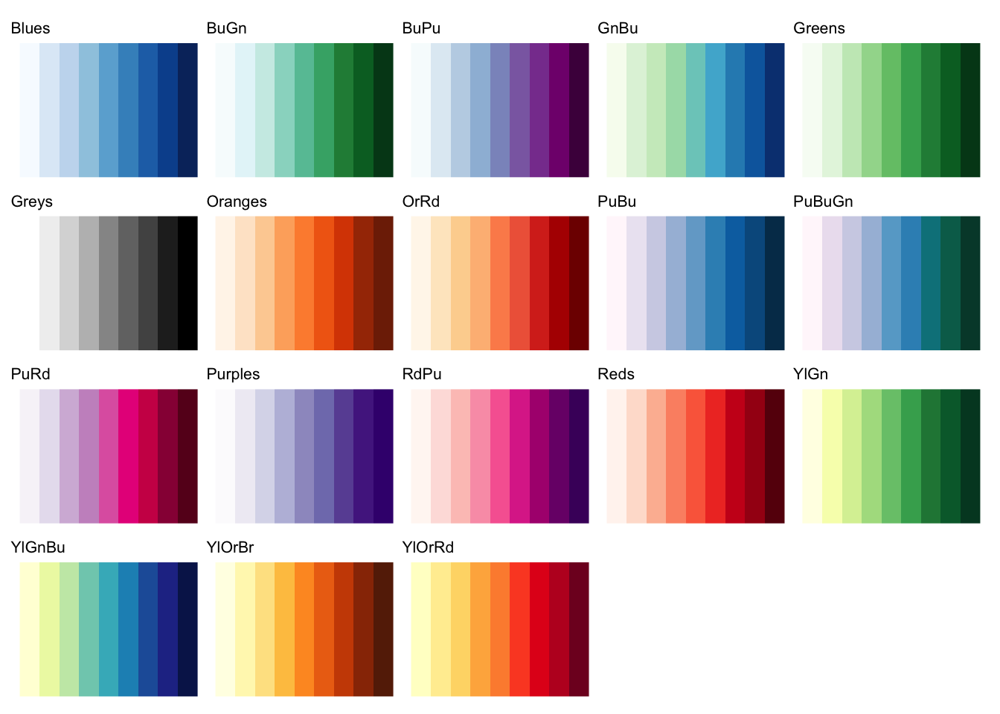
ImportantChoosing the right type of colour scale
It is important to only use the right type of colour scale in the right circumstances, since using the wrong type of scale could end up misleading people reading your map. For example, a diverging colour scale gives the strong impression that the central point in the scale is meaningful.
In some circumstances this might be useful, for example if you wanted to show areas in which crime had increased in shades of one colour and areas in which crime had decreased in shades of another colour. In that case, a diverging scale would be appropriate because the central point represents something meaningful: no change in crime. If the central point is not meaningful, use a sequential colour scheme instead.
If you want to represent a categorical variable, you should use a categorical colour scale unless the categories have a natural order. For example, if you wanted to show ethnic groups on a map you would use a categorical colour scale, since there is no one order of ethnic groups that is any more meaningful than any other. If you wanted to represent days of the week with colour, then you might want to use a sequential colour scheme since the days of the week have a meaningful order.
By default, scale_fill_distiller() sets the lowest values to have the darkest colour. This does not work well for density maps, since most people tend to interpret sequential colour schemes as if the palest or least-saturated colours represent the lowest values and the darkest or most-saturated colours represent the highest values. If we design maps that meet that expectation, people will generally find them easier to interpret. Fortunately we can do that by setting the argument direction = 1.
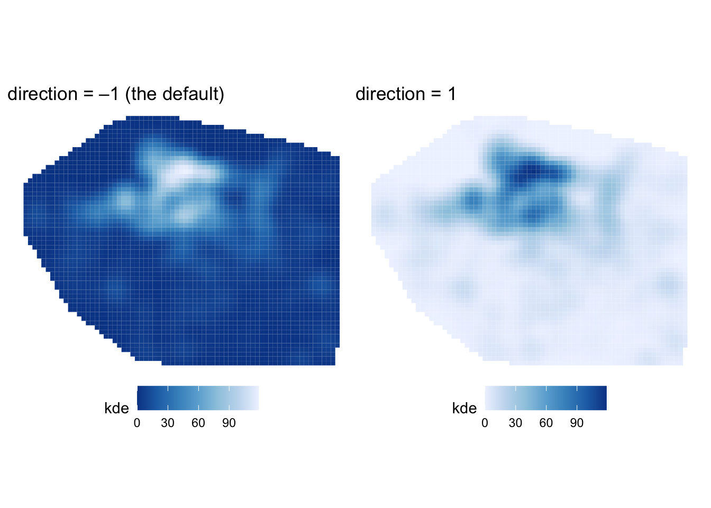
You can think of all the functions that we can add to ggplot() as being like a stack of pancakes, with each new function being placed on the top of the stack. To change the colour of our map, we just add scale_fill_distiller() to the existing stack. Add this code to chapter_06.R:
chapter_06.R
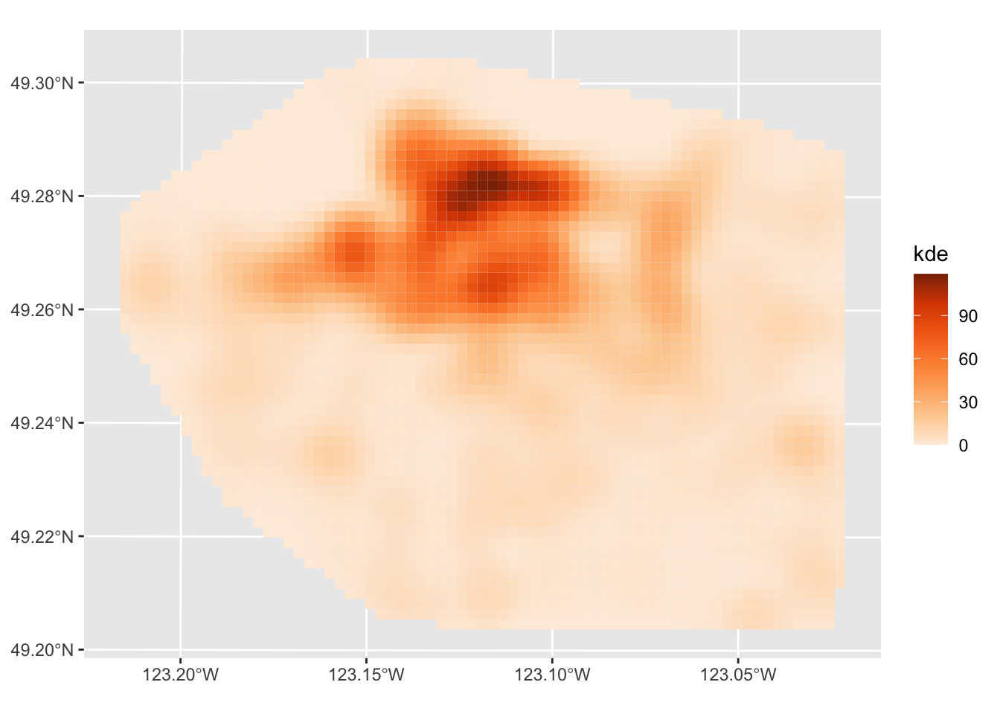
You can see that on this map it’s intuitively easier to see which areas have the highest density of bike thefts. But there is still more that we can do to improve this map.
QuizMaking density maps
What R package do we use to make density maps using the hotspot_kde() function?
What is the bandwidth_adjust argument of the function hotspot_kde() used for?
In what circumstances is it appropriate to use a diverging colour scale, e.g. one that goes from blue to white to red?
Why is it a bad idea to use a diverging colour scheme for crime density maps?
6.3 Clipping map layers
There is one limitation of the KDE layer on our map that we need to deal with. The area covered by the KDE layer is determined by the area covered by the point data that we provided to hotspot_kde(). More specifically, hotspot_kde() will calculate density values for every cell in the convex hull around the point data, i.e. for the smallest polygon that contains all the points in the data.
This can be a problem in some circumstances, because we do not necessarily have crime data for all the areas within the convex hull of the data, even though KDE values will be calculated for those areas. This could be misleading, since it will look like such areas have low crime density, when in fact we do not know what the density of crime in such areas is because they are outside the area for which we have crime data..
Fortunately, we can easily deal with this problem by clipping the KDE layer to the boundary of the area for which we have crime data. This means we will only show densities for cells for which we actually have data.
A. We only have data on bike thefts from the City of Vancouver, so all the bike thefts in the data necessarily occurred within the city. We do not know what the density of recorded bike theft outside the city is.
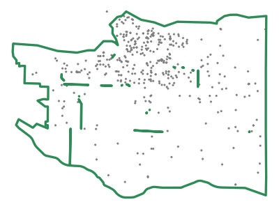
B. The KDE function only knows the theft locations, not the area in which thefts could have occurred. So the convex hull created by the KDE layer will not necessarily match the area of the data.
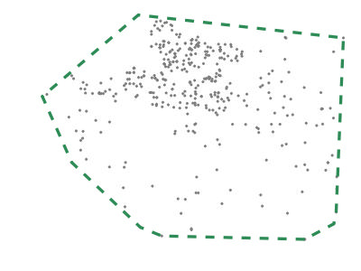
C. In this case, that means some areas (shaded) will be included in the KDE layer even though they are outside the area covered by the data, which could be misleading.
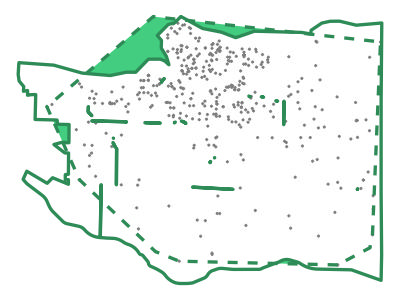
D. To avoid suggesting we know the density of crimes in areas for which we do not have data, we should clip the KDE layer to the boundary of the area for which we have data.
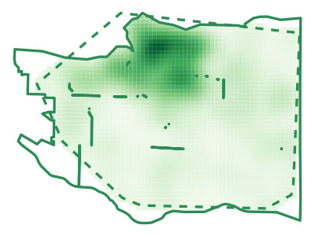
To clip the KDE layer to the boundary of the area for which we have data, we need a new dataset that contains the boundary of the City of Vancouver. Fortunately this dataset is available online in a spatial format known as a GeoJSON file. GeoJSON is a spatial file format, so we can load it in R using the read_sf() function from the sf package.
As we did for the theft data in Chapter 5, we will first download the boundary data into data/raw, then read the local copy. This records where the data came from while keeping the analysis available if the website is temporarily unavailable later. Add this code immediately after the existing code that downloads the theft data but above the code that loads and wrangles the data.
Add the following code after the pipeline that loads and wrangles the bike-theft data and before the code that creates bike_theft_density:
You might have noticed that as well as loading the boundary data with read_sf(), we have transformed the data to use the same co-ordinate system (EPSG:32610) as is used for the bike_thefts object. This is because we can only clip datasets that use the same co-ordinate system.
Before we clip the density layer to the city boundary, check that your file chapter_06.R looks like this:
chapter_06.R
# Load packages
pacman::p_load(ggspatial, here, httr2, sf, sfhotspot, tidyverse)
# Download the raw data
request(
"https://mpjashby.github.io/crimemappingdata/vancouver_thefts.csv.gz"
) |>
req_perform(path = here("data", "raw", "vancouver_thefts.csv.gz"))
request(
"https://mpjashby.github.io/crimemappingdata/vancouver_neighbourhoods.geojson"
) |>
req_perform(
path = here("data", "raw", "vancouver_neighbourhoods.geojson")
)
# Load and wrangle bike theft data
thefts <- read_csv(here("data", "raw", "vancouver_thefts.csv.gz")) |>
janitor::clean_names() |>
st_as_sf(coords = c("x", "y"), crs = "EPSG:32610")
bike_thefts <- filter(thefts, type == "Theft of Bicycle")
# Load Vancouver neighbourhood boundaries
vancouver_nbhds <- here("data", "raw", "vancouver_neighbourhoods.geojson") |>
read_sf() |>
st_transform("EPSG:32610")
# Estimate density of bike thefts
bike_theft_density <- hotspot_kde(
bike_thefts,
bandwidth_adjust = 0.5,
quiet = TRUE
)
# Plot density map
ggplot() +
geom_sf(aes(fill = kde), data = bike_theft_density, colour = NA) +
scale_fill_distiller(palette = "Oranges", direction = 1)We can clip the KDE layer produced by hotspot_kde() to the boundary of the City of Vancouver using the hotspot_clip() function from sfhotspot. hotspot_clip() keeps the parts of the KDE cells that fall inside the area covered by the boundary layer and removes the rest.
We will now add the code needed to clip the KDE layer to the city boundary to chapter_06.R. Since we do not need the unclipped version of the KDE layer in the final map, we can combine hotspot_kde() and hotspot_clip() in one pipeline. Replace the code that creates bike_theft_density with this code:
chapter_06.R
- 1
-
take the
bike_theftsobject, and then - 2
- use it to estimate the density of thefts and then
- 3
-
clip the resulting density object to the boundary stored in the
vancouver_nbhdsobject.
Removed 397 rows (12.0% of original rows) from `data`If you aren’t comfortable with how the pipe operator works, you might want to refer back to Section 4.6.
ImportantBoth layers must use the same co-ordinate system
hotspot_clip() requires both spatial layers to use the same co-ordinate system. If the layers use different co-ordinate systems, transform one of them with st_transform() so that it uses the same system as the other layer.
If you do not know which co-ordinate systems the layers use, you can use the st_crs() function to extract the co-ordinate system from one layer and pass that value as the second argument to st_transform(). For example:
We can quickly check the effect of clipping the density layer to the city boundary by producing a very basic map that shows both layers in separate colours. Run this code in the R Console:
R Console
ggplot() +
# Add convex hull of bike thefts to map
geom_sf(data = bike_theft_density, fill = "blue") +
# Add clipped density layer to map
geom_sf(data = bike_theft_density_clip, fill = "green") +
# Add city boundary to map for comparison
geom_sf(data = vancouver_nbhds, colour = "black", fill = NA, linewidth = 1)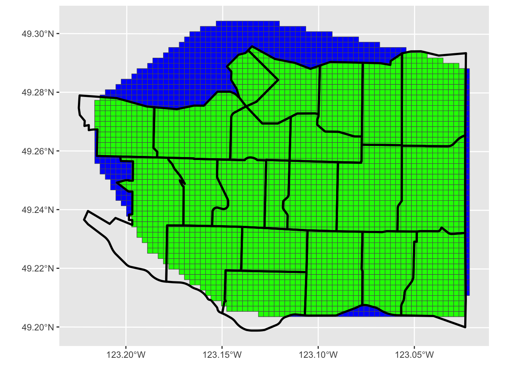
From this map, we can see that while the bike_theft_density object (shown in blue) contains cells outside the black city boundary, the bike_theft_density_clip object (shown in green) contains only cells inside the boundary.
QuizClipping map layers
What is the purpose of the hotspot_clip() function?
Why is it important to clip a KDE layer to a relevant boundary in crime mapping?
6.4 Adding a base map
The density map we have made is much more effective than a point map at allowing us to identify where the highest number of bike thefts in Vancouver occur. However, it’s still quite difficult to know where those places are, because we cannot easily work out where in the city these places are. We can make this much easier by adding a base map underneath the density layer.
We can add a base map using the annotation_map_tile() function from the ggspatial package. We can add annotation_map_tile() to a ggplot() stack in the same way that we would add geom_*() functions. Since we want the base map to appear under the density layer, we add the base map layer to the ggplot() stack first. So that we can see the base map underneath the density layer, we will also make the density layer semi-transparent using the alpha argument to geom_sf().
Replace the existing ggplot() stack in the chapter_06.R file with this code and then run it:
chapter_06.R
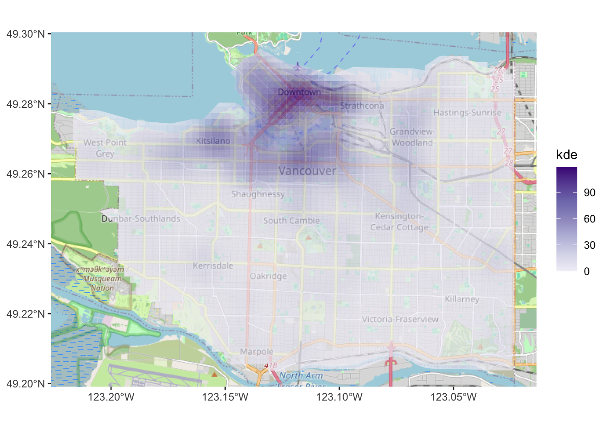
The base maps returned by annotation_map_tile() are available at many different zoom levels, from level 1 that is useful for mapping the whole world in one map, to level 20 that can be used to map a single building. By default, annotation_map_tile() downloads tiles with slightly less detail than we might want, but we can fix this by using the argument zoomin = 0. We could also set a specific zoom level using the zoom argument, but it’s usually best to use zoomin instead. If you make a map and find the base map doesn’t look right, check that you haven’t accidentally set zoom = 0 instead of zoomin = 0.
We can see some of the different zoom levels available by looking at these maps, which show the same area around the UCL Jill Dando Institute with base maps at different zoom levels.
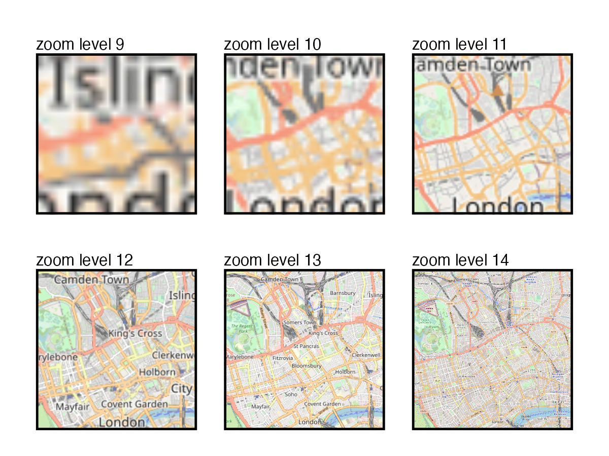
Choosing the right zoom level is a matter of balancing the level of detail in the map and the clarity of the image. In the maps above, zoom levels less than 12 tend to have pixelated images because they do not contain enough detail, while zoom levels greater than 13 contain too much detail and so the information is hard to read. But if this map covered a smaller or larger area, a different zoom level might be better. In general, setting zoomin = 0 and not setting any value for the zoom argument – so that annotation_map_tile() chooses the zoom level automatically – will produce an acceptable map.
annotation_map_tile() also gives us access to several different types of base map. The default style (seen in the maps above) is called ‘osm’ because it is the default style used by OpenStreetMap, the organisation that provides the map data. We can specify which style of base map we want using the type argument to annotation_map_tile().
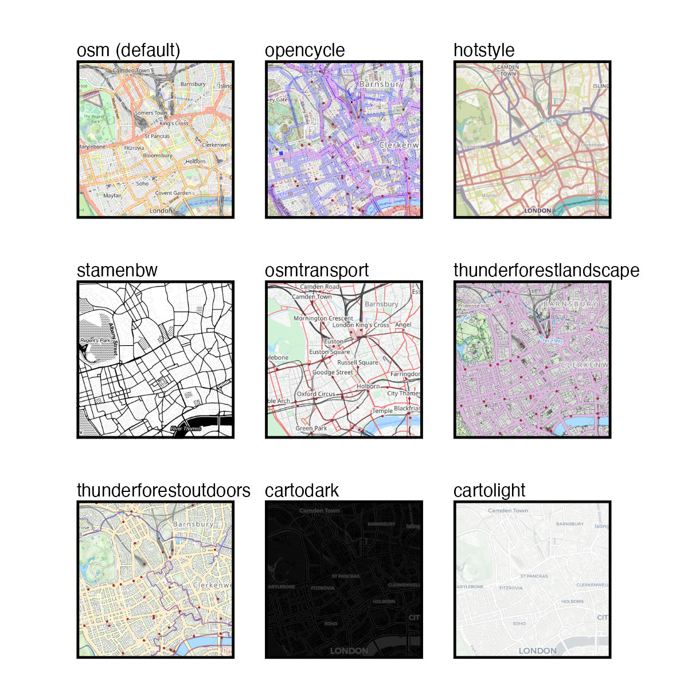
You may want to experiment with different base map styles by using the type argument to annotation_map_tile(), e.g. using annotation_map_tile(type = "cartolight", zoomin = 0, progress = "none").
One final note about the annotation_map_tile() function: you might have noticed that when we have used it above we have always set the argument progress = "none". This stops the function from printing a progress bar while it is downloading the map tiles. The progress bar can sometimes be useful, but when you include the output from an R function in a report (as you will learn to do in Chapter 14), the output from the progress bar is likely to interfere with the formatting of the report. To prevent that, we use the progress = "none" argument.
QuizBase maps
What is the purpose of adding a base map to a crime map in R?
Which R package is commonly used for adding base maps to crime maps?
Why might you need to be careful in choosing the right base map when creating a crime map?
6.5 Adding more layers
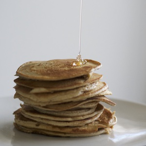
Adding a base map underneath our density layer makes it easier to understand where in Vancouver the highest densities of bike theft are. But our map could make it easier still to see where clusters of thefts occur. We could, for example, add the names of different neighbourhoods in the city, and show the city limits so that we can tell which areas have no crime because crimes in those areas are not included in our data.
In an earlier section I suggested we can think of ggplot charts, including maps, as being like stacks of pancakes – each function we use to amend the appearance of our chart is added to the top of the stack. So to add another layer to our map, we just add another geom_ function to our plot.
At the same time, we can also add labels to the plot at the centre of each neighbourhood using the geom_sf_label() function. geom_sf_label() works like geom_sf() in that it adds a spatial dataset to a map, but instead of adding the points, lines or polygons themselves, geom_sf_label() instead adds labels for those features.
We use the aes() function to specify which column in the vancouver_nbhds dataset we want to use for the label text. If we used head(vancouver_nbhds) to look at the columns in the data, we would see the neighbourhood names are contained in the column called name. Normally, we would use the code aes(label = name) to do this because the label aesthetic is used to set the label text. But in this case we also want to wrap the labels so that they don’t overlap adjacent neighbourhoods. To do this we can use str_wrap() from the stringr package (part of the tidyverse), so that instead our call to the aes() function becomes aes(label = str_wrap(name, width = 10)).
To see how geom_sf_label() works, let’s create a quick map in the R Console. Paste the following code into the Console and run it:
R Console
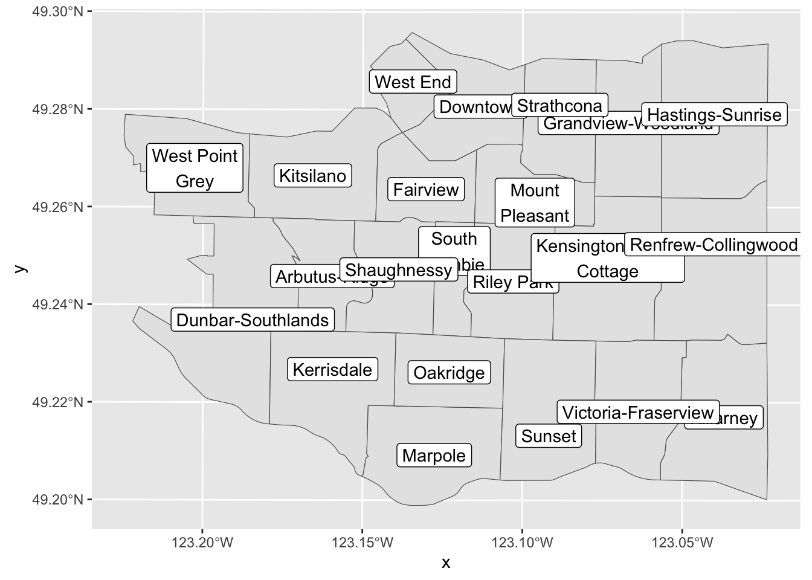
Now let’s add these labels to the map in our script file. At the same time we will change the style of the labels so that they look better on the map. To do this, we will add several more arguments to geom_sf_label(), which are explained after the next piece of code.
Replace the existing ggplot() stack in the chapter_06.R file with this stack and then run that code:
chapter_06.R
# Plot density map
ggplot() +
# Add base map
annotation_map_tile(type = "cartolight", zoomin = 0, progress = "none") +
# Add density layer
geom_sf(
aes(fill = kde),
data = bike_theft_density_clip,
alpha = 0.75,
colour = NA
) +
# Add neighbourhood boundaries
geom_sf(data = vancouver_nbhds, colour = "seagreen3", fill = NA) +
# Add neighbourhood names
geom_sf_label(
aes(label = str_wrap(name, 10)),
data = vancouver_nbhds,
1 alpha = 0.5,
2 colour = "seagreen",
3 lineheight = 1,
4 size = 2.5,
5 linewidth = NA
) +
# Set the colour scale
scale_fill_distiller(direction = 1)- 1
-
alpha = 0.5to make the label background semi-transparent so that we can see the density layer underneath it, - 2
-
colour = "seagreen"to slightly reduce the prominence of the label text to avoid distracting attention from the density layer, - 3
-
lineheight = 1to reduce the gap between lines in each label, - 4
-
size = 2.5to slightly reduce the size of the label text, - 5
-
linewidth = NAto remove the default border around the label background.
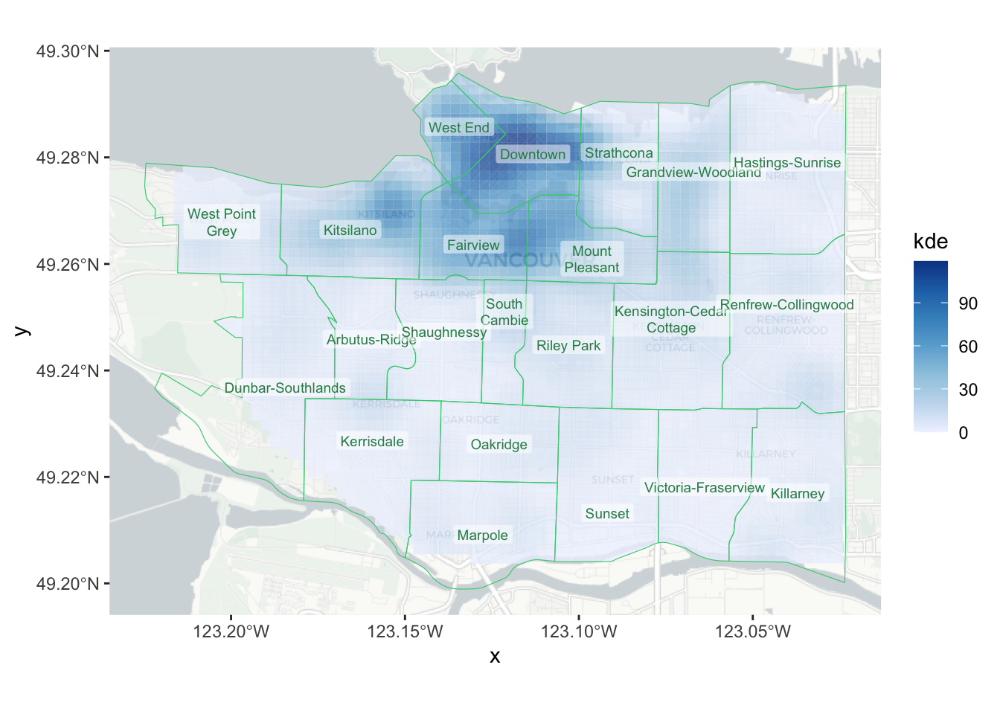
From this map, we can see that recorded bike theft in Vancouver is heavily concentrated in a handful of neighbourhoods, particularly Downtown and the West End. This map makes the broad pattern easier to see than the point map in Chapter 5, and shows how the concentrations relate to different areas of the city.
QuizAdding map layers
Where should the base-map layer appear in a ggplot() stack?
Which function adds labels at the locations of spatial features?
What does str_wrap(name, width = 10) do to the neighbourhood labels?
TipTips for producing effective density maps
- Make density layers semi-transparent so that readers can see the base map underneath. Try
alpha = 0.7ingeom_sf(), then adjust the value until both the density layer and the geographic context are clear. - Produce separate density layers for different types of crime. Combining offences can hide distinct spatial patterns and will make the result more strongly influenced by whichever offence is most numerous.
- Be cautious about mapping offences that are mainly found through police activity, such as drug or weapon possession. Their recorded locations can reflect where officers patrol as much as where offences occur.
- Remember that a KDE map shows concentrations of recorded events, not the risk that an event will happen to a person or place. Interpreting risk also requires information about the relevant population or opportunities and will be covered in Chapter 11.
6.6 In summary
In this chapter you learned how KDE can make broad patterns in a large point dataset easier to see. A density map can help practitioners explore where recorded events are concentrated, but it should not determine decisions by itself: the result can also reflect reporting, opportunities, population and police activity.
You can now:
- estimate density with
hotspot_kde(); - adjust grid-cell size and bandwidth;
- map density using an appropriate sequential colour scale;
- clip a density layer with
hotspot_clip(); and - add a base map, boundaries and labels in the correct layer order.
Your complete script should now look like this:
chapter_06.R
# This script produces a density map of bicycle thefts in Vancouver in 2020.
# Load packages
pacman::p_load(ggspatial, here, httr2, sf, sfhotspot, tidyverse)
# Download the raw data
request(
"https://mpjashby.github.io/crimemappingdata/vancouver_thefts.csv.gz"
) |>
req_perform(path = here("data", "raw", "vancouver_thefts.csv.gz"))
request(
"https://mpjashby.github.io/crimemappingdata/vancouver_neighbourhoods.geojson"
) |>
req_perform(
path = here("data", "raw", "vancouver_neighbourhoods.geojson")
)
# Load and wrangle bike-theft data
thefts <- here("data", "raw", "vancouver_thefts.csv.gz") |>
read_csv() |>
janitor::clean_names() |>
st_as_sf(coords = c("x", "y"), crs = "EPSG:32610")
bike_thefts <- filter(thefts, type == "Theft of Bicycle")
# Load Vancouver neighbourhood boundaries
vancouver_nbhds <- here("data", "raw", "vancouver_neighbourhoods.geojson") |>
read_sf() |>
st_transform("EPSG:32610")
# Estimate density of bike thefts and clip the result
bike_theft_density_clip <- bike_thefts |>
hotspot_kde(bandwidth_adjust = 0.5, quiet = TRUE) |>
hotspot_clip(vancouver_nbhds)
# Plot density map
ggplot() +
# Add base map
annotation_map_tile(type = "cartolight", zoomin = 0, progress = "none") +
# Add density layer
geom_sf(
aes(fill = kde),
data = bike_theft_density_clip,
alpha = 0.75,
colour = NA
) +
# Add neighbourhood boundaries
geom_sf(data = vancouver_nbhds, colour = "seagreen3", fill = NA) +
# Add neighbourhood names
geom_sf_label(
aes(label = str_wrap(name, 10)),
data = vancouver_nbhds,
alpha = 0.5,
colour = "seagreen",
lineheight = 1,
size = 2.5,
linewidth = NA
) +
# Set the colour scale
scale_fill_distiller(direction = 1)The script is in a logical order: it loads packages, downloads and prepares data, estimates and clips density, then produces the map. It includes only the permanent code needed to repeat the analysis, and comments identify each task.
Save chapter_06.R by pressing . To check that the analysis is reproducible, restart R using the Restart R (⟳) button in Positron’s Console panel, then run the script from beginning to end. Keep the script in the R folder and the downloaded source files in data/raw.
You can learn more about:
- the arguments and output of
hotspot_kde()in the sfhotspot documentation; - adding base maps and other spatial elements with the ggspatial package;
- choosing and using colour schemes in Working with colours in R; and
- exploring palettes using the Color Palette Finder.
QuizRevision questions
Answer these questions to check you have understood the main points covered in this chapter. Write between 50 and 100 words to answer each question.
- What is kernel density estimation (KDE), and why is it useful for mapping crime patterns? Explain the process briefly.
- Why can density maps be more effective than point maps for visualising patterns in large crime datasets?
- What are the main factors to consider when adjusting grid-cell size and bandwidth? How can these adjustments affect a KDE map?
- Why is it important to clip a density layer to the boundary of the area covered by the data, and which function should you use?
- How does the choice of colour scale affect the interpretation of a density map? When should you use sequential, diverging and qualitative colour schemes?